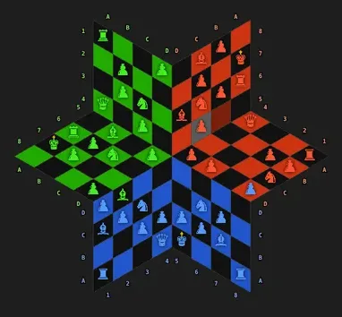
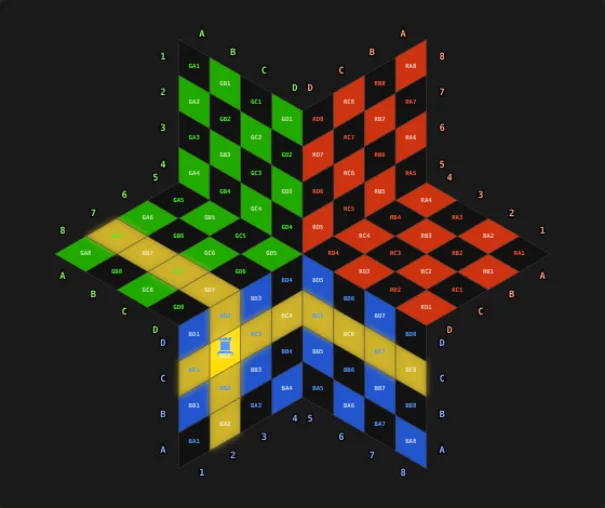
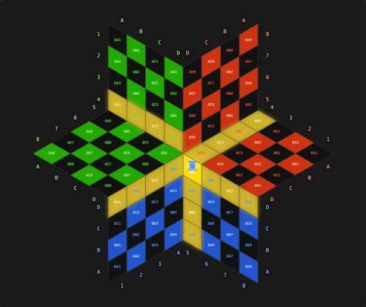
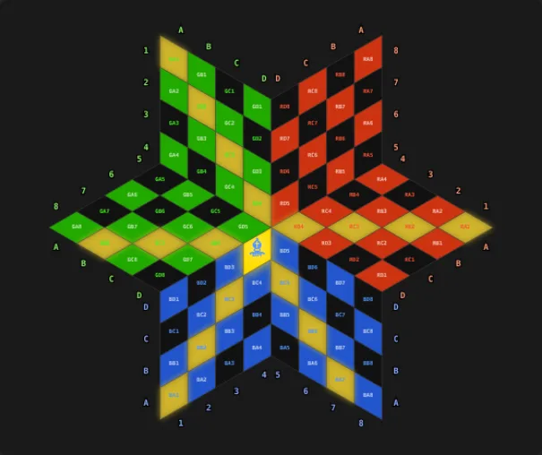
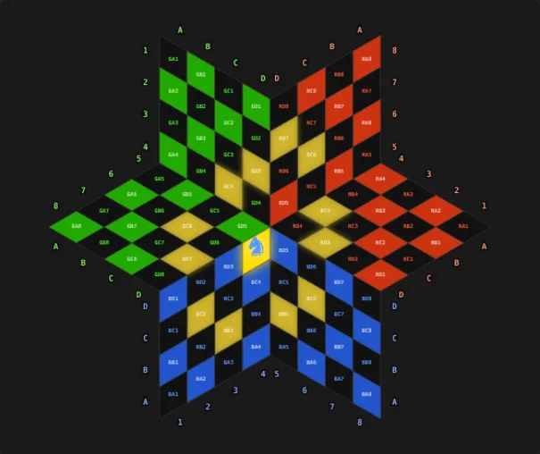
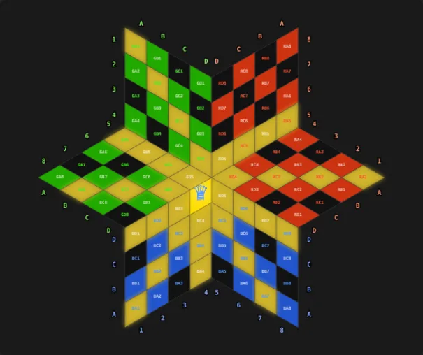
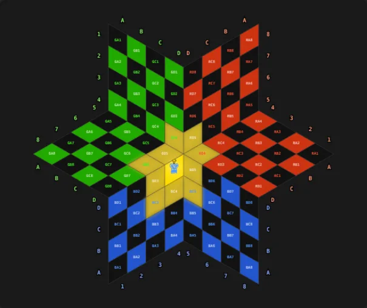
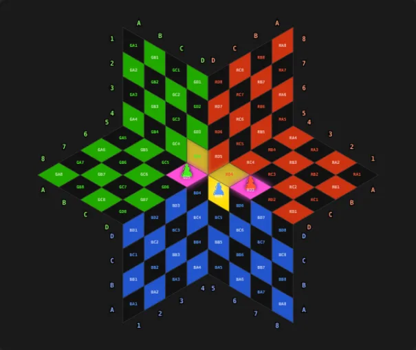
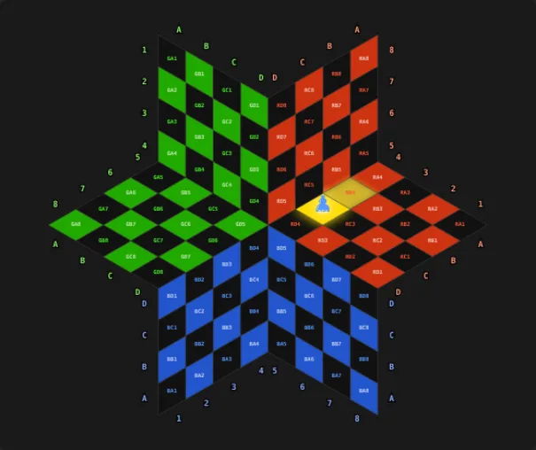

游戏规则
会下普通国际象棋的人，五分钟就能上手。这里列出全部规则——从棋盘、穿过中央的走法，到让三人对局真正公平的救援义务。

亲自试试
点击一张图片：练习棋盘会以完全相同的局面打开。你还可以把任意棋子放到任意格子上，立即看到它能走到哪里。








玩家与棋盘
- 三位玩家：蓝、绿、红。轮流走棋：蓝 → 绿 → 红。
- 棋盘是由三个区组成的大卫之星，每区 4 × 8 格：行 A–D，列 1–8。A 行是自己的底线，D 行紧邻棋盘中央。
- 每位玩家和普通国际象棋一样有 16 枚棋子。王在 A5，后在 A4。
穿过中央的走法
- 越过自己 D 行的棋子进入相邻区——到该区的 D 行——然后继续朝该区的 A 行走。
- 列会镜像翻转：第 c 列变成第 9 − c 列。
- 车和后（直线）：从第 1–3 列进入一个相邻区，从第 6–8 列进入另一个。从中间的第 4、5 列可以到达两个区。
- 象和后（斜线）：象也能越入相邻区，在中央尖端处可进入两个区。
- 马：前后两步、横向一步（或反之），也可穿过中央。边界处的少数过渡除外。
- 王：向任何方向走一格，也可进入相邻区。
- 在游戏的开始窗口中，可以在“🎯 练习棋盘”里试验每个棋子。
兵
- 在自己的区内，兵朝中央前进（A → D），从 B 行出发也可走两格。
- 穿过中央后进入相邻区，继续朝该区的 A 行前进。兵斜向前吃子，也可穿过中央。
- 升变：在他人区的 A 行。
- 吃过路兵：兵走两步后，在走两步的玩家再次走棋之前，两位对手都可以吃过路兵。
王车易位
- 王（A5）和车未曾移动，中间的格子空着且未受攻击。短易位：王到 A7，车 A8 → A6。长易位：王到 A3，车 A1 → A4。
将军、救援义务与将死
- 被将军的一方必须解除将军。任何走法都不能让自己的王处于被将军状态。
- 救援义务：如果某位玩家被将军，而第三位玩家在他之前走棋，则第三位玩家不得走出使被威胁者被将死的棋。如果被威胁者已经被将死，第三位玩家必须解救他——若做不到，将死成立。如果不论第三位玩家怎么走，被威胁者都能自救，则没有任何限制。
- 将死即结束对局。获胜者是向王将军的人——而不是只封住逃跑格的人。另外两人告负。
无棋可走
- 无法在不被将军的情况下走棋的玩家跳过一轮。如果没有人能再走棋，则由分数决定。
时间与分数
- 可选每步限时（超时 → 本步作废）和/或每局限时（用完 → 不能再走棋，棋子仍可被吃）。
- 分数：自己在棋盘上的棋子 + 吃掉的对手棋子。兵 1，马和象 3，车 4，后 6。平分时，用时较少者获胜。
操作
- 点击棋子 → 可走的格子亮起 → 点击目标格。“↶ 返回”或 Ctrl+Z 可以悔棋。
- 游戏上方：“＋ 新游戏”、“📁 对局”（保存、载入、着法列表）和“👁 视图”（坐标、旋转棋盘、颜色、全屏）。另有3D视图、🔊 声音、⏸ 暂停和👥 玩家窗口。
- 电脑对手是8个怪兽，各有自己的外形、声音和棋风：Blubbo, Grumbo, Flammo, Zappo, Spuki, Kraki, Sonno, Fluffi。在开始窗口中，你可以为每个电脑座位选择由哪个怪兽来下。它们会高兴、生气、谈判和结盟——用“🎤”就能直接和它们说话。
记谱法
每个格子都有一个由三个字符组成的名字：区（B、G 或 R 分别代表蓝、绿、红）、行（A 到 D）和列（1 到 8）。所以 BA5 就是蓝区的 A5 格——开局时蓝王所在的位置。一步棋记作起点和终点，例如兵走两步记为 BB4–BD4；吃子用“×”，例如 GC3×RD6。
提示：游戏中可在“👁 视图”里显示坐标。右上角的着法列表用这种记法显示每一步，用📼可以逐步回放任何一局。